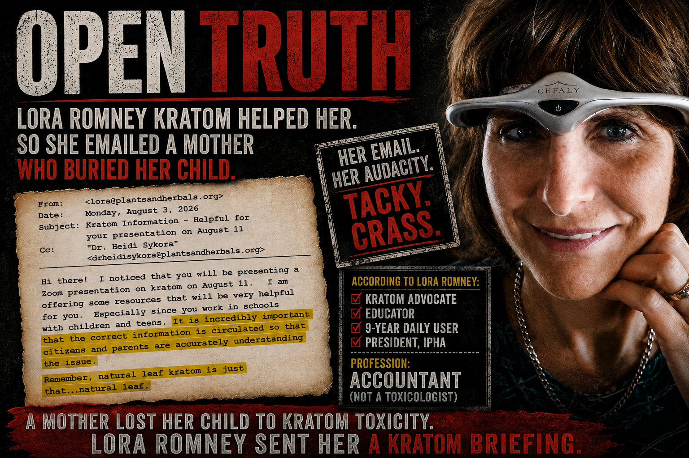
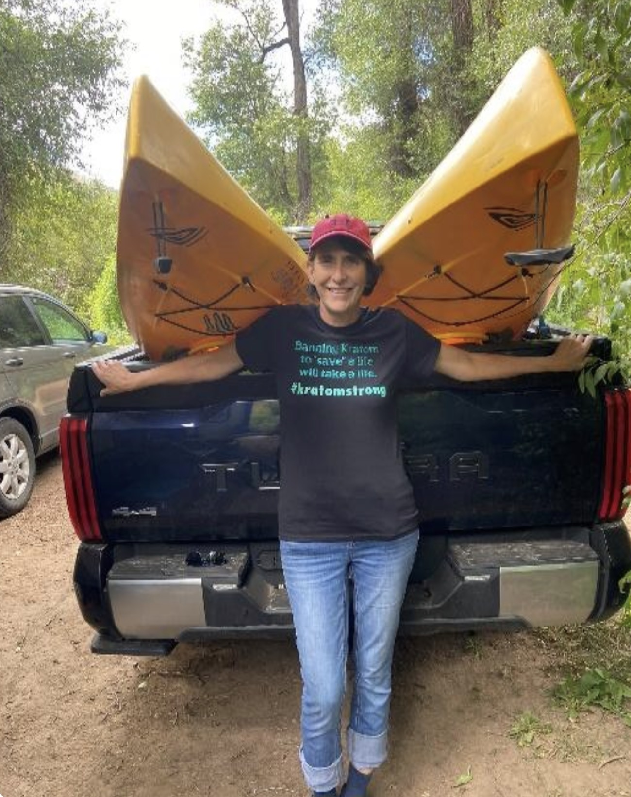

Lora Romney has a compelling kratom story.
She also has pictures.
Before Kratom: medical procedures, uncontrolled pain, disability.
With Kratom: smiling, kayaking, living life and being a grandma.
It is an enormously effective presentation.
There is only one small problem.
That's not how we determine whether a psychoactive drug is safe or effective.
Romney has repeatedly described severe chronic pain and extensive medical treatment before discovering kratom.
In earlier testimony, she described atypical trigeminal neuralgia, prescription opioids and eventually choosing kratom after her physician told her she would have to choose between kratom and oxycodone.
In more recent testimony, she presents the transformation visually.
Before kratom: suffering.
After kratom:
She describes herself as working, volunteering, caring for her grandchildren and thriving again.
Good.
Seriously.
If Lora Romney is kayaking instead of suffering at home, good for Lora Romney.
But somewhere between the paddle and the statehouse, an important distinction disappears:

The before-and-after format is one of the oldest sales techniques on Earth.
And now:
Except legislators aren't shopping for wrinkle cream.
They're deciding public drug policy.
A photograph can demonstrate that Lora Romney went kayaking.
It cannot tell lawmakers:
Romney's experience deserves to be heard.
But listen carefully to how testimonial advocacy works.
A person says:
Completely legitimate personal testimony.
Then comes the leap:
That's a much larger proposition.
Now we're no longer asking what happened to Lora Romney.
We're asking what rules should apply to millions of other people.
And Lora's kayak cannot answer that question.
In North Dakota testimony, Romney described severe chronic pain, extensive previous treatment and substantial relief from approximately two grams of kratom.
Again, perhaps that's exactly what happened.
But drug policy would become wonderfully simple if that were enough.
No controlled trials necessary.
No population-level risk assessment.
No tedious pharmacology.
Just locate somebody with a compelling story and preferably an outdoor hobby.
There's another interesting feature of testimonial advocacy.
When kratom works, causation is beautifully uncomplicated.
The substance receives remarkably direct credit for the favorable outcome.
But public-health decisions require something less cinematic.
They have to count the people whose experiences don't belong in the brochure too.
Those people don't disappear simply because somebody else bought a kayak.
This is the part kratom advocates frequently misunderstand.
Questioning the evidentiary value of Romney's story is not accusing her of lying.
Maybe kratom helped her tremendously.
Maybe she accurately remembers every detail.
Maybe she would choose it again tomorrow.
Fine.
Her experience still establishes only this:
That's meaningful to Lora Romney.
It may be meaningful to a physician treating Lora Romney.
It may even be worth studying scientifically.
But it does not establish population-wide safety or efficacy.
That requires something substantially more rigorous than:
Suppose somebody testified:
Before oxycodone, I couldn't function. After oxycodone, I went camping. Here are the photographs.
Would legislators declare oxycodone broadly safe?
Of course not.
Suppose someone said:
Adderall gave me my career back. Here's a picture of me getting promoted.
Would that settle stimulant policy?
No.
And if somebody stood before Congress holding a smiling photograph and saying alcohol helped them relax, sleep and socialize, nobody would mistake the vacation album for a randomized controlled trial.
Yet attach leaves to the substance and suddenly personal transformation stories acquire remarkable scientific powers.
Lora Romney should tell lawmakers what happened to her.
Absolutely.
But lawmakers aren't deciding whether Lora Romney should be happy.
They're deciding what should be commercially available to everyone else.
That requires asking questions her experience cannot answer.
Those experiences count too.
Public health is rather inconvenient that way.
You have to count everybody.
Lora Romney's story is powerful because it is human.
It is also limited for precisely the same reason.
One person. One outcome. One experience.
She went from debilitating pain to a life she describes as active, productive and fulfilling.
Wonderful.
Put the photographs in the testimony.
Tell the story.
Let legislators hear every word.
Then put the photographs down and answer the actual policy question:
Because a smiling woman in a kayak may be persuasive.
It may be inspiring.
It may even be completely authentic.
But there is one thing it isn't.
And until kayaks receive FDA approval as validated pharmacological endpoints, perhaps drug policy should require something more.
The documents below are provided so readers can examine Romney's statements in their original context and decide for themselves. Descriptions summarize the contents; readers are encouraged to examine the underlying records directly.